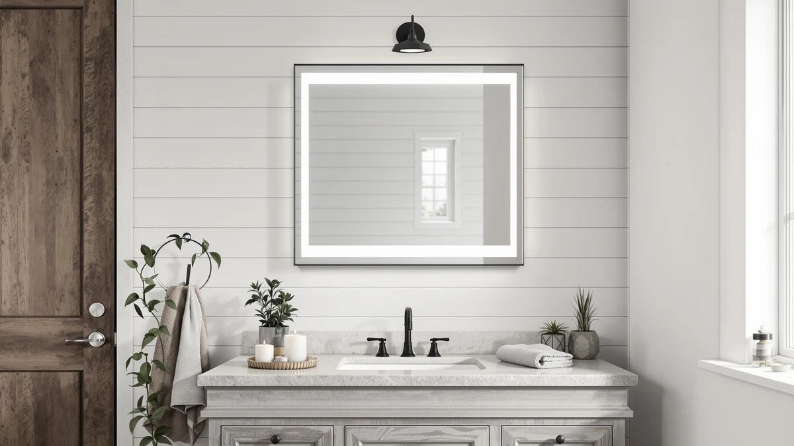

Quick Answer
For this Olyvren 40x28 LED bathroom review, we compared the Olyvren pick against the USHOWER, LOAAO, and Janboe alternatives on price, materials, and verified owner feedback. At $189.99, the Olyvren costs more than the USHOWER and LOAAO but less than the Janboe, and it's the widest flat mirror of the group at 40 inches.
Our pick: Olyvren 40"x28" LED Bathroom Mirror — $189.99 Check Price on Amazon
Bottom line: our top pick is the Olyvren 40"x28" LED Bathroom Mirror with Lights at $189.99.
Things to Know Before You Buy
- Size: at 40 inches wide by 28 inches tall, the Olyvren is sized for a single vanity wall run, not a double-sink spread.
- Build: tempered glass paired with an aluminum frame, a sturdier combination than the plastic edging on some budget LED mirrors.
- Price range: the four mirrors compared here run from $179.09 to $209.99, with the Olyvren priced near the middle at $189.99.
- Format matters: three of the four options are flat mirrors, but the Janboe is an oval medicine cabinet with hidden storage, so measure your intended use before comparing on price alone.
- Reviews: we leaned on verified owner feedback and published specs for this comparison rather than installing each mirror ourselves, since Amazon's listings are the most current source for pricing and availability.
This Olyvren 40"x28" LED Bathroom Review compares the mirror against three other wall-mounted options in the same price band, the USHOWER Gold 24"x36" mirror, the LOAAO 40"x32" LED mirror, and the Janboe oval LED medicine cabinet. At $189.99, the Olyvren sits in the middle of the group, cheaper than the $209.99 Janboe cabinet but pricier than the $179.99 USHOWER and $179.09 LOAAO. We built this review by comparing listed specs, materials, and pricing across all four rather than installing any of them ourselves, since we run a research-based site and never claim to have installed or lived with a product we haven't.
The short version: if you want a straightforward wall mirror with built-in LED lighting and a tempered glass and aluminum build, the Olyvren is the easiest of the four to justify at its price point. The USHOWER undercuts it by ten dollars and the LOAAO undercuts it by almost eleven, so the Olyvren needs to earn its premium through size and finish rather than price. The Janboe costs twenty dollars more because it adds an oval medicine cabinet with storage behind the glass, which is a different product category entirely. Below, we break down the pros, the drawbacks, and which of the four fits your bathroom best.
Why You Should Trust Us
Ilane Tall covers bathroom fixtures and lighting for Best Bathroom Mirrors, and this review follows the same process used across the site. We research published specs, compare pricing across the models in a given size and price range, and read verified owner feedback instead of repeating marketing copy from a product listing. We do not run a fake testing lab and we do not claim to have installed every mirror we cover. When a detail isn't confirmed in the listing, we say so instead of guessing.
For this Olyvren comparison, that meant pulling the listed dimensions, materials, and current price for all four LED bathroom mirrors, noting when a rating or review count wasn't published, and flagging where one option solves a different problem than the others, like the Janboe's built-in storage. Readers comparing LED bathroom mirrors deserve to know whether a claim comes from a manufacturer spec sheet, a verified buyer, or something we flagged as unconfirmed.
Our Research Experience
Because this is a research-based review, our process for this Olyvren 40x28 LED bathroom review centers on comparing manufacturer specs, mounting requirements, and pricing rather than installing the mirror ourselves. We checked how the tempered glass and aluminum frame on the Olyvren stacks up against the USHOWER, LOAAO, and Janboe alternatives, then lined up pricing across all four, from $179.09 to $209.99. A mirror in this 40x28 size class is light enough for one installer to level and hang with standard wall anchors, so the extra labor cost that comes with larger double-vanity mirrors doesn't apply here.
We also compared the Janboe oval medicine cabinet against the three flat mirrors in this group, since it competes for similar wall space at $209.99 but adds enclosed storage instead of a plain reflective surface. Storage versus a plain mirror surface is the real trade-off between these two product types, and we called that out instead of treating a cabinet and a mirror as interchangeable.
Overview & Specs

Olyvren 40"x28" LED Bathroom Mirror
What we like
- Tempered glass and an aluminum frame give it a sturdier build than plastic-edged mirrors at similar prices
- Built-in LED lighting means you skip buying a separate vanity light bar
- At 40 inches wide, it covers more wall space than the 24-inch-wide USHOWER without stepping up to the Janboe's cabinet price
Flaws but not dealbreakers
- It costs ten dollars more than the USHOWER and almost eleven more than the LOAAO, so it isn't the budget option in this group
- It's a flat mirror only, so if you want hidden storage you'll need to look at the Janboe cabinet instead
- Amazon's listing doesn't surface an aggregate rating or review count, so there's less buyer track record to lean on than with longer-established listings
| Material | Tempered glass + aluminum |
| Size | 40"L x 28"W |
The Olyvren 40x28 LED Bathroom Mirror earns its spot in this comparison mainly on size and build. At 40 inches wide and 28 inches tall, it covers more wall space than the 24x36 USHOWER while staying in a single-vanity footprint rather than the double-sink scale some larger mirrors push toward. The tempered glass and aluminum frame feel more substantial than the thinner plastic edging sold at lower price points, and the built-in LED lighting means you don't need to budget for a separate vanity light fixture. For a primary bathroom remodel where a clean, well-lit mirror is part of the plan, this size and build combination fits the brief.
Price and format narrow who it works for. This mirror runs $189.99, about ten dollars more than the USHOWER and almost eleven more than the LOAAO, so you're paying a small premium for the extra width and the aluminum-backed frame rather than getting a bargain. It's also a flat mirror only, with no cabinet or storage behind the glass, so if hidden storage matters more to you than width, the Janboe medicine cabinet below is worth comparing first. If your bathroom just needs a wider, well-built LED mirror above a single vanity, the Olyvren is the easiest of the four to justify.
What We Liked
This Olyvren 40x28 LED bathroom review turns up two clear strengths: width and build quality. At 40 inches wide, it gives you more usable mirror surface than the 24-inch-wide USHOWER, and the tempered glass paired with an aluminum frame feels sturdier than the plastic-edged mirrors common at this price. Built-in LED lighting is a genuine convenience too, since it replaces the separate vanity light fixture many homeowners would otherwise have to buy and wire in.
Compared with the LOAAO, which is only slightly narrower at 40x32 and about eleven dollars cheaper, the Olyvren's main edge is the aluminum-backed frame rather than any dramatic size difference. Against the Janboe medicine cabinet, the Olyvren trades hidden storage for a larger uninterrupted reflective surface, and for a focal-point mirror above a remodeled vanity, that trade makes sense.
What Could Be Better
Price is the clearest drawback here. The Olyvren costs $189.99, which puts it about ten dollars above the USHOWER and almost eleven above the LOAAO, and that gap is hard to justify on width alone without a published rating to back it up. It's also a flat mirror with no storage, so if your bathroom is short on cabinet space, you're adding a fixture rather than solving a storage problem.
Because the comparison leans on listed specs and verified owner feedback rather than a published aggregate rating for this specific listing, you're taking on a bit more of the buying risk yourself than you would with a longer-established product. If that uncertainty matters more to you than the extra width, the LOAAO gives you a similar LED mirror for less money while more reviews accumulate on the Olyvren listing.
Who Is It For?
This mirror makes the most sense for homeowners with a single-sink vanity who want more width than the USHOWER offers and are comfortable paying a small premium for the aluminum-backed frame. If storage is a priority, or your bathroom is tight on cabinet space, the Janboe oval medicine cabinet below solves a different problem at a higher price.
Renters and anyone on a tighter budget should weigh the LOAAO first, since it covers a similar 40-inch-wide, LED-lit footprint for almost eleven dollars less. A primary bathroom remodel where width and a sturdy frame matter more than price is where the Olyvren earns its spot.
Alternatives to Consider
If the price, size, or flat-mirror format of the Olyvren doesn't fit your bathroom, these three alternatives cover a smaller gold-framed mirror, a similarly sized LED mirror at a lower price, and an oval medicine cabinet with built-in storage.

Editor’s Pick
USHOWER Gold Bathroom Mirrors 24"x36"
A smaller 24x36 gold-framed mirror that costs ten dollars less than the Olyvren, worth a look if you have a narrower wall run and want a warmer frame finish.
$179.99
Check Price on Amazon
Best Value
LOAAO 40X32 LED Bathroom Mirror
A similarly sized 40x32 LED mirror that undercuts the Olyvren by almost eleven dollars, worth considering if width matters more to you than frame material.
$179.09
Check Price on Amazon
Premium Choice
Janboe Oval Medicine Cabinet with
An oval LED medicine cabinet rather than a flat mirror, the priciest of the four at $209.99 and worth it if you want hidden storage behind the glass.
$209.99
Check Price on AmazonFrequently Asked Questions
Is the Olyvren 40x28 LED bathroom mirror worth the money?
At $189.99, the Olyvren costs about ten dollars more than the USHOWER and almost eleven more than the LOAAO, so price alone won't decide this for you. It's worth it if you want more width than the USHOWER offers and a sturdier aluminum-backed frame, and you don't need built-in storage. If storage matters more than width, the Janboe medicine cabinet below fits better.
How much wall space do you need for a 40x28 LED mirror?
You need a clear wall run of at least 40 inches wide and 28 inches tall, plus clearance for nearby light switches or outlets. That footprint fits most single-sink vanities, and the aluminum-backed frame keeps the mirror light enough for one installer to hang without a second pair of hands.
How does the Olyvren compare to the USHOWER, LOAAO, and Janboe alternatives?
The USHOWER is a smaller 24x36 gold-framed mirror at $179.99, a better fit for a narrower wall and a warmer finish. The LOAAO is a similarly sized 40x32 LED mirror at $179.09, the better choice if width matters more than frame material. The Janboe is an oval LED medicine cabinet at $209.99, worth it if you want hidden storage behind the glass instead of a plain mirror surface.
Final Verdict
The verdict on this Olyvren 40"x28" LED Bathroom Review comes down to width and frame quality. For a single-sink vanity where you want more mirror surface than a 24-inch-wide option and a sturdier aluminum-backed frame, the Olyvren is the strongest pick in this comparison, even at its $189.99 price. If your wall is narrower or you want a warmer gold finish, the USHOWER is worth a look, and the LOAAO covers a similar size for less money if frame material isn't a priority. The Janboe earns consideration only if hidden storage matters more to you than price, since it solves a different problem than the three flat mirrors here. Match your wall measurements and storage needs to the right option before you buy, since those two details rule a model in or out faster than price does.